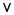
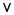

Satisfying the Satisfiability Problem
C/C++ Users Journal September, 2005
Algorithms for hard problems
By Girish Keshav Palshikar
Girish Keshav Palshikar is a scientist at Tata Research Development and Design Centre (TRDDC), Pune, India. He can be contacted at GK.Palshikar@tcs.com.
Propositional logic plays a central role in digital hardware, software engineering, artificial intelligence, and areas of computer science where it is used to model systems, conditions, and properties. A variety of problems and systems can be modeled using propositional logic, including practical problems in diagnosis, planning, scheduling, and the like. Analysis of systems modeled in propositional logic and reasoning about their properties is then performed using standard techniques from propositional logic. It is common to translate the system model into a standard form called the "conjunctive normal form" (CNF). The most important fundamental technique in propositional logic is that of checking whether a given formula in CNF is satisfiable—the so-called "SAT" problem [1].
Checking satisfiability of formulae in CNF is a problem of fundamental importance in theory as well as applications of computer science. It was the first problem to be proved NP-complete, which means that there are no known efficient algorithms for solving it. All known algorithms for NP-complete problems have an exponential time complexity in the worst case. Literally thousands of problems, many of great practical importance, are known to be NP complete. A curious characteristic of the class of NP-complete problems is that if any of them can be solved efficiently, all of them can be solved efficiently. That is, representations and algorithms for one NP-complete problem (SAT, for instance) can be used for any other NP-complete problem.
Due to the practical importance of NP-complete problems and of SAT in particular, much research has gone into designing algorithms that work reasonably well for many practical applications. In this article, I survey and implement in C (available at http://www .cuj.com/code/) algorithms for the SAT problem—the Davis-Putnam algorithm, GSAT algorithm, and simulated annealing algorithm.
Propositional Logic
A proposition (or variable) is an atomic symbol (without any internal structure) that stands for a declarative statement that can be true or false. For instance, let PROP denote the set of propositions. Propositional logic provides the logical connectives  (and), (or),
(and), (or),  (not),
(not),  (implies), and
(implies), and  (if-and-only-if). Additional connectives like (XOR) can also be defined. is a unary connective, the others binary connectives. A formula is a string of symbols constructed from propositions in PROP and the logical connectives; for instance, p (q (r)) and (p q) r. An interpretation I is a function I from PROP to the set {true, false} that associates a Boolean truth-value with each proposition in PROP. The truth-value TV(F) of a formula F is computed by combining the truth-values of its subformulae, according to the truth-table in Table 1.
(if-and-only-if). Additional connectives like (XOR) can also be defined. is a unary connective, the others binary connectives. A formula is a string of symbols constructed from propositions in PROP and the logical connectives; for instance, p (q (r)) and (p q) r. An interpretation I is a function I from PROP to the set {true, false} that associates a Boolean truth-value with each proposition in PROP. The truth-value TV(F) of a formula F is computed by combining the truth-values of its subformulae, according to the truth-table in Table 1.
For example, the formulae p p and p p are both true under all possible interpretations (p = true or p = false); such a formula is called a "tautology" or "validity." The formula p p is not true (that is, it is always false) under any possible interpretation; such a formula is called unsatisfiable or contradiction. A formula like p q evaluates to true in at least one interpretation; such a formula is called consistent or satisfiable and the corresponding interpretation is called a model for F. Given a formula F, checking whether F is satisfiable is called the satisfiability problem. There is no known efficient (that is, polynomial time) algorithm to solve this problem that works for any arbitrary formula F in propositional logic.
Let PROP be a finite set of propositional symbols. Then a positive literal is just a symbol from PROP and a negative literal is the negation of a symbol from PROP. A clause is a disjunction (or) of literals; for instance, p q r is a clause where the positive literal p occurs and negative literals q and r occur. A unit clause is the clause containing exactly one literal; for example, p. The empty clause, denoted [], is the clause that contains no literals—it is unsatisfiable. A formula is said to be in the conjunctive normal form (CNF) if it is a conjunction (and) of clauses; for example, (p q r) (p r) (q r) is a formula in CNF. There are simple and efficient algorithms that can convert any formula in propositional logic to an equivalent formula in CNF. In this article, I work only with CNF.
A simple exhaustive search algorithm can be designed to check whether a given CNF formula F is satisfiable. If F is constructed from N propositional symbols, then this algorithm sequentially generates all possible 2N interpretations (for instance, all rows of the truth table for N propositions) and checks whether F is true in any one of them. If it detects one such an interpretation I, it stops and outputs I. Although this method is acceptable for small values of N (say up to 10 or so), in practice, it is not unusual to encounter formulae involving thousands of propositions. For large and complex situations, the algorithm is clearly extremely inefficient and we need better algorithms for SAT.
Before discussing SAT algorithms, I first define a standard format in which examples (test cases) of CNF formulae can be given as input and results of the algorithm (for instance, the model interpretation, if the given formula is satisfiable) are stored as outputs in text files.
DIMACS Format
Researchers working on SAT problems have agreed on a common format, called the "DIMACS format," for storing CNF formulae in ASCII files. This standardized format facilitates creation of a database of "hard" or "benchmark" formulae for comparison of various SAT tools [3].
The file preamble contains information about the formula. The first part in the preamble is a set of zero or more comment lines, each beginning with the letter c as the first character on the line. The contents of the comment line are ignored. The next part in the preamble consists of a single problem definition line beginning with the letter p as the first character on the line and having the format:
p FORMAT VARIABLES CLAUSES
where FORMAT is always the string cnf, VARIABLES is the number n of propositional symbols used, and CLAUSES is the number m of clauses in the formula. Each of the next m lines contains a clause. The variables are numbered from 1 to n and negation of a variable i is denoted by -i. Each clause is represented by a sequence of numbers separated by whitespace and terminated by 0. The following file contains the CNF formula (p q r) (p q) (p) r s:
c This is a comment line
c
p cnf 4 5
1 2 -3 0
1 -2 0
-1 0
3 0
4 0
The output of the SAT algorithm is also reported in a standard format in an output file. The first "solution line" in the output file has this format:
s TYPE SOLUTION VARIABLES CLAUSES
where TYPE is always the string cnf; SOLUTION is 1 if the formula is satisfiable, 0 if the formula is unsatisfiable, and -1 if no decision could be reached by the program; values for VARIABLES and CLAUSES are the same as in the problem line of the input file. If the formula is satisfiable, then the next "variable lines" state the value to be assigned to variables and each line has the format:
v V
where the value V is either a positive value i (meaning the variable i should be set to 1) or a negative value -i (meaning the variable i should be set to 0). Because the just mentioned formula is unsatisfiable, the output file for it should contain only the following line (and no variable lines):
s cnf 0 4 5
C Implementation
We now come to the question of how a CNF formula that is stored in a text file in DIMACS format can be represented internally by a C program (available at http://www.cuj.com/code/). The DIMACS format does not allow any truth-constant to appear in a clause. This is an unnecessary restriction—I allow the truth-constants to appear in a clause. The truth-constants FALSE and TRUE are represented by integers 0 and 1, respectively. Each proposition (positive literal) is represented by a unique internal ID, which is a positive integer from MIN_PROP_ID (=2) to MAX_PROP_ID, both inclusive. This is different from the DIMACS format where the variables are numbered from 1 onwards (you number them from 2 onwards). So you internally number a variable as k+1 in a DIMACS file. A negative literal is represented by the negative integer corresponding to the ID of the proposition; for instance, if the ID of a proposition r is 4, then the negative literal r is represented by -4.
The CNF formula F = {C1, C2, ..., Cn} where each Ci is a clause, is stored in the integer array aCNF as a sequence of clauses Ci, separated by the integer end marker END_CLAUSE. The end marker for the last clause Cn is followed by the end marker END_FORMULA to designate the end of the entire formula. Each clause is stored as the sequence of literals in it and the entire clause is the disjunction of these literals. A positive (negative) literal is stored as a positive (negative) number, which is the (negation of) ID of the corresponding proposition. For example, to represent the CNF formula F = {p q r, p q, p, r, s}, the array aCNF is initialized as follows (the internal IDs for propositions p, q, r, and s are 2, 3, 4, and 5, respectively):
int aCNF[MAX_FORMULA] = {2,3,-4,END_CLAUSE, 2,-3,END_CLAUSE,
-2,END_CLAUSE, 4,END_CLAUSE, 5,END_CLAUSE, END_FORMULA};
An integer array aInt is used to store an interpretation. For example, if PROP ={p, q, r, s} is the set of all propositions, to represent the partial interpretation I = {p=true, q=false, s=true}, the array aInt is initialized as given below. For the proposition r, for which no truth-value is assigned by I, the array aInt stores the value defined by the constant UNKNOWN. The interpretation is terminated by the constant END_INT:
int aINT[MAX_PROP+1] = {TRUE,FALSE,UNKNOWN,TRUE, END_INT};
If the internal ID of a proposition is X, then the truth-value assigned to it in the interpretation is found at the position (or index) X - MIN_PROP_ID in the array aInt; for instance, the ID of q is 3, index for q is 3-2=1, and its truth-value in the interpretation is obtained by aInt[1]. Thus, in this interpretation, the negative literal p evaluates to FALSE (because p is assigned the truth-value TRUE in this interpretation; for instance, aInt[0] = TRUE), the positive literal s evaluates to TRUE in I, and the literal r evaluates to UNKNOWN in I.
The function Read_DIMACS_CNF reads the given text file containing a CNF formula in the DIMACS format and stores it in the given integer array (in the internal format). The function Write_DIMACS_CNF converts the CNF formula in the given integer array to the DIMACS format and writes it to the given text file. The function Read_DIMACS_output creates the output text file containing the results (in DIMACS format) of satisfiability for a formula.
The function EvalFormula evaluates and returns the truth-value of the given formula in given interpretation. The formula is TRUE in an interpretation I if, and only if, all its clauses are TRUE in I and the formula is FALSE in I if at least one of its clauses is FALSE in I. A clause, in turn, is TRUE in an interpretation I if at least one of its literals evaluates to TRUE in I. A clause is FALSE in an interpretation I if all its literals evaluate to FALSE in I. The truth-value of a clause is UNKNOWN in an interpretation I if it does not evaluate to either TRUE or FALSE and at least one literal in the clause evaluates to UNKNOWN in I. Thus, the aforementioned formula (stored in array aInt) evaluates to FALSE in the given interpretation (stored in aInt), even though one proposition r that occurs in the formula is not assigned any truth-value by the interpretation.
The Davis-Putnam Algorithm
The basic algorithm for satisfiability is by Davis, Putnam, and Loveland (Figure 1) [2]. In this recursive algorithm, the given CNF formula S (a set of clauses) is first simplified by repeatedly applying some simplification rules, until no further changes are possible. After that, the algorithm is recursively called first with putting L = true for some literal L that occurs in the formula. If putting L = true does not result in the formula being satisfied, then the algorithm recursively puts L = false.
The simplifications are as follows. A clause that contains the constant true or both p and p for some proposition p is a tautology. In the tautology rule, all such clauses are removed from the given formulas; the remaining set is unsatisfiable if and only if S is. The pure literal rule is as follows: A literal L is pure in S if the literal L does not appear in any clause in S. If a literal L is pure in S, delete all clauses in S that contain L. The remaining set S' is unsatisfiable if, and only if, S is. For example, in the CNF formula {p q, q, p q r}, the literal r is pure; hence after applying the pure literal rule, the resulting formula is {p q, q}. In this formula, the literal p is pure; hence, we apply the pure literal rule again, resulting in the formula {q}. Now the literal q is pure; the formula then becomes the empty set, which is satisfiable. Hence, the original formula is also satisfiable. A CNF formula can be further simplified as follows if a unit clause L (containing only one literal L) occurs in it. First, if L is also a unit clause in S, then clearly S is unsatisfiable. If not, (1) delete every clause in S that contains L (including the unit clause L) (unit subsumption step); and (2) remove L from every clause in S in which L occurs (unit resolution step). For example, the CNF formula {p q r, p q, p, r, u} is simplified as follows. For unit clause u, the resulting formula is {p q r, p q, p, r}. For the unit clause r, the resulting formula is {p q, p q, p}. For the unit clause p, the resulting formula is {q, q}. Because the unit clauses q and q both occur in this formula, this formula is unsatisfiable, and hence the original formula is also unsatisfiable. These rules are based on the facts that A (A B) is equivalent to A and A (A B) is equivalent to A B.
Figure 2 illustrates the DP algorithm on an example CNF formula {p q r, p q r, p q r, p q r, p q r, p q r}. The literals chosen in the split step are shown next to the edges. The algorithm produces the interpretation {p _false, q _true, r _false} to show that the given formula is satisfiable. Note that splitting with literal L amounts to substituting L = true in the formula and simplifying the resulting formula. The DP algorithm does not specify how to choose the splitting literal. Many clever heuristic strategies have been designed to choose the right literal for splitting, so as to minimize the resulting work. Notice that, in Figure 2, if we had chosen p before p for splitting, then the entire computation in the left branch could have been avoided. However, no strategies are known that work for all formulae; in the worst case, the DP algorithm ends up trying all possible 2N interpretations. It is easy to verify, using the DP algorithm, that the set {p q r, p q, p, r, u} is unsatisfiable, the set {p q, q, p q r} is satisfiable, and the set {p q, p q, q r, q r} is satisfiable.
The functions TautologyRule, PureLiteralRule, UnitSubsumptionRule, and UnitResolutionRule, respectively, implement the tautology rule, the pure literal rule, unit subsumption rule, and the unit resolution rule. The recursive function Sat_DP implements the DP algorithm in Figure 1. The C function also outputs the satisfying interpretation for the given formula in the output file (if the formula is satisfiable). The syntax for the executable program is:
sat_cnf InputFileName OutputFileName SatAlgoID
where the command-line parameters specify the input file containing a CNF formula, the output file where the results are written, and a code for the SAT algorithm to be used (0 for Davis-Putnam). The SATLIB archive [3] contains a collection of text files, each containing a sample CNF formula; the program can be used check the satisfiability of these formulae.
GSAT
The Davis-Putnam algorithm is called a "complete SAT algorithm" because it always returns with the correct answer, however long it may take. There is another class of incomplete SAT algorithms, which do not guarantee to always find the correct answer but whose execution time can be controlled through a parameter. The longer we set this value, the more likely that the algorithm will find the correct answer. Such algorithms are typically stochastic (that is, based on randomization) local search techniques. The most prominent among them is the GSAT algorithm in Figure 3 [4].
Essentially, the GSAT algorithm starts with a random interpretation T for the given formula S. If T is a model for S then T is returned. Otherwise, GSAT selects a proposition p that appears in S and "flips" (reverses) the truth-assignment for p in T. Because T is not a model for S, T satisfies only a certain subset of the clauses in S. The proposition p selected is such that if the truth-assignment to p is flipped, then the number of clauses in S that are satisfied is increased the most. Starting with a random interpretation T, the selection of p and its flipping is done at most MAX_FLIPS times. Otherwise, a new T is generated and the process repeated. Thus, GSAT makes at most MAX_TRIES * MAX_FLIPS attempts at finding a model for S, thus providing a bound on the execution time. The C function Sat_GSAT implements the earlier algorithm. To execute GSAT, use the following command line (the parameter SatAlgoID is 1 for GSAT). Note the extra arguments to be given:
sat_cnf InputFileName OutputFileName 1 MaxTries MaxFlips
One variation of GSAT, called HSAT, is as follows: In GSAT, if flipping of more than one variable leads to the same maximum increase in the number of satisfied clauses, then the proposition p to be flipped is chosen randomly from this set. In HSAT, the least recently flipped proposition is chosen as p. It is straightforward to implement HSAT by maintaining a "history" of the flipping.
It is easy to see that GSAT is a kind of greedy "hill-climbing" algorithm that always chooses to go to that next interpretation (obtained from the current interpretation), which maximizes the number of satisfied clauses. It is a well-known characteristic of such algorithms that they get trapped in "local minima" from where no further progress is possible. One simple strategy to avoid this problem is to jump to another interpretation where the number of satisfied clauses is actually less than in the current interpretation. The simulated annealing algorithm offers a systematic way of doing this.
Simulated Annealing (SA)
Simulated annealing (SA) is a well-known heuristic optimization technique that mimics the natural process of slow cooling of liquids that leads to a solid form that has the lowest energy. Essentially, the probability, at a temperature T, with which the search algorithm moves from a state s1 of energy E1 to another state s2 of energy E2 is given by e-(E1 - E2)/kT. Clearly, whenever E2 < E1 the system will definitely move to s2 but when E2 > E1, the state change is probabilistic. An interesting thing to note about this Boltzmann distribution is that it lets the algorithm (which is searching for a lowest energy state) move to a higher energy state during the search, although with a small chance. This chance decreases with temperature T, so that the lower the temperature, the higher the chance that the system is in the lowest energy state. Note that SA is also an incomplete SAT algorithm, like GSAT [5].
For applying SA to the SAT problem, one way to define analogues of temperature and energy is as follows: The state corresponds to an interpretation I and its energy E(I) corresponds to the number of satisfied clauses in the formula in I. Given an interpretation I and another interpretation I' obtained from I by flipping one of its variables, the difference in their energies DE=E(I')-E(I) is the change in the number of satisfied clauses. The Boltzmann constant k is often taken to be 1. The notion of temperature is often purely artificial (that is, it does not correspond to any real aspect of the problem) and can be defined to vary from a given maximum value Tmax to a given minimum value Tmin. A number of cooling or annealing strategies are used to systematically drop the temperature from Tmax until it reaches Tmin; the most common is the geometric annealing schedule where the next temperature is obtained from the current temperature by the geometric series formula Tnext=g×Tcurrent, where g is a given constant between 0 and 1. SA approaches to SAT have been found to be promising among the incomplete stochastic search algorithms.
Other Approaches to SAT
A number of other approaches to SAT are possible. Many are based on either an improvement to the Davis-Putnam algorithm or are along the same general lines as GSAT and differ in the flipping strategies used. One such approach, called "WSAT-G(p)," is as follows: Randomly pick an unsatisfied clause cj. With a given probability p (called noise level), randomly select and flip a variable xi in cj. Otherwise, select and flip that variable xi in cj that results in the fewest number of unsatisfied clauses. There are many variations on this theme. Another significant approach is based on Discrete Langragian Multiplier (DLM). One more widely used approach is based on the ordered binary decision diagrams (OBDD). Finally, [6] describes a method that has been used in large-scale, real-life applications.
An extremely interesting empirical observation about SAT problem instances is the phase transition. It has been observed empirically that the hardest instances of the SAT problems are found when the ratio of number of clauses to number of variables is about 4.3 (and when the number of variables is large). For CNF formulae above or below this threshold, most SAT algorithms find it easy to decide their satisfiability. However, for formulae near this threshold, most algorithms take a very long time, thus running into the exponential barrier [7].
Acknowledgments
Thanks to Professor Mathai Joseph for his support. Dr. Manasee Palshikar has been the source of great comfort and strength in critical times.
References
- [1] For a discussion of how diagnosis can be stated as a SAT problem, see "Consistency-Based Diagnosis," by G.K. Palshikar, Dr. Dobb's Journal, March 2001.
- [2] M. Davis and H. Putnam. "A Computing Procedure for Qualification Theory." Journal of the ACM, 1960.
- [3] Details on the format, a database of CNF formulae, and more information about SAT tools are available at http://www.satlib.org/.
- [4] B. Selman, H. Levesque, and D. Mitchell. "A New Method for Solving Hard Satisfiability Problems," Proceedings of AAAI National Conference on Artificial Intelligence, 1992, MIT Press, pp. 440-446).
- [5] For a discussion of the SA algorithm and its C implementation, which can be applied to the SAT problem, see "Simulated Annealing: A Heuristic Optimization Algorithm," G.K. Palshikar, Dr. Dobb's Journal, September 2001.
- [6] M. Sheeran and G. Stelmarck. "A Tutorial on Stelmarck's Proof Procedure for Propositional Logic," Formal Methods in System Design, 2000.
- [7] R. Monasson, R. Zecchina, S. Kirkpatrick, B. Selman, and L. Troyansky. "Determining Computational Complexity from Characteristic Phase Transitions," Science, July 1999. q